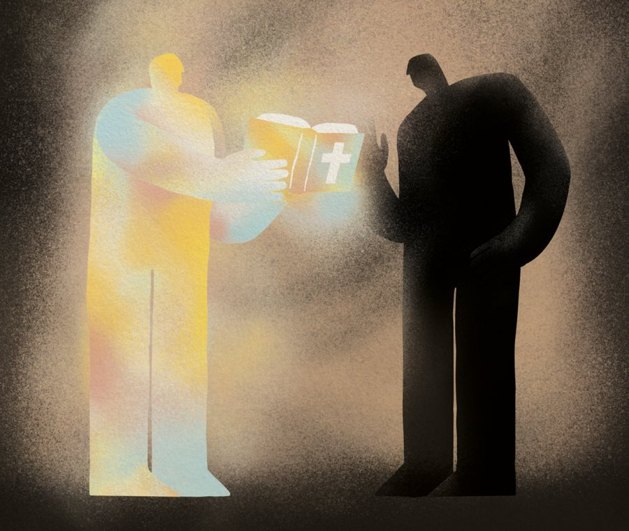
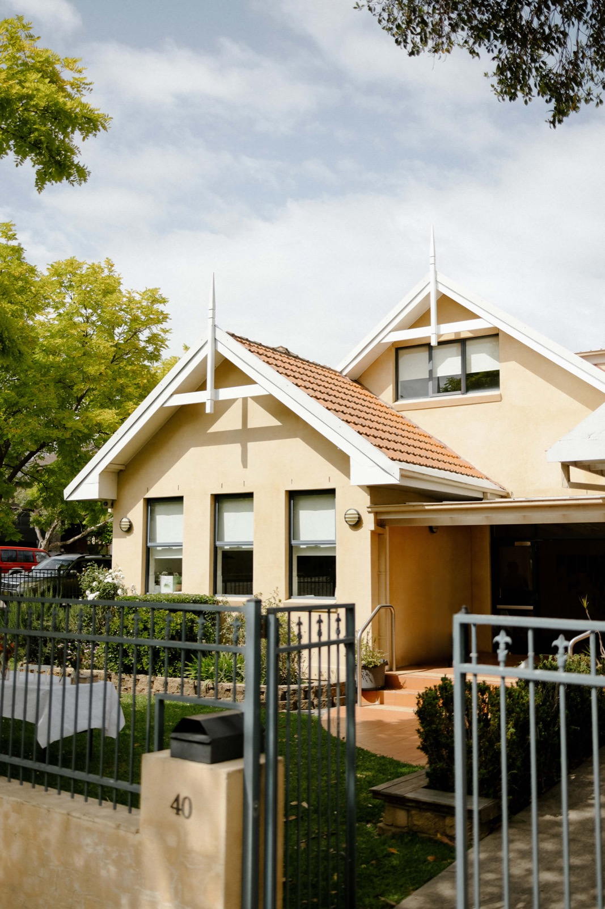

Welcome to
Sydney B-P Church
You are invited to join us for our Worship Service at 10.00am every Sunday at 40 Stanbury St, Gladesville
If you are unable to join us in person, you are also welcome to join us online via 'Zoom'.
Join Livestream
Our Belief
Sydney Bible-Presbyterian Church is a Christ-centred, Bible-believing church belonging to the “reformed faith” as expressed in the Westminster Confession of Faith.
Learn moreYearly Events